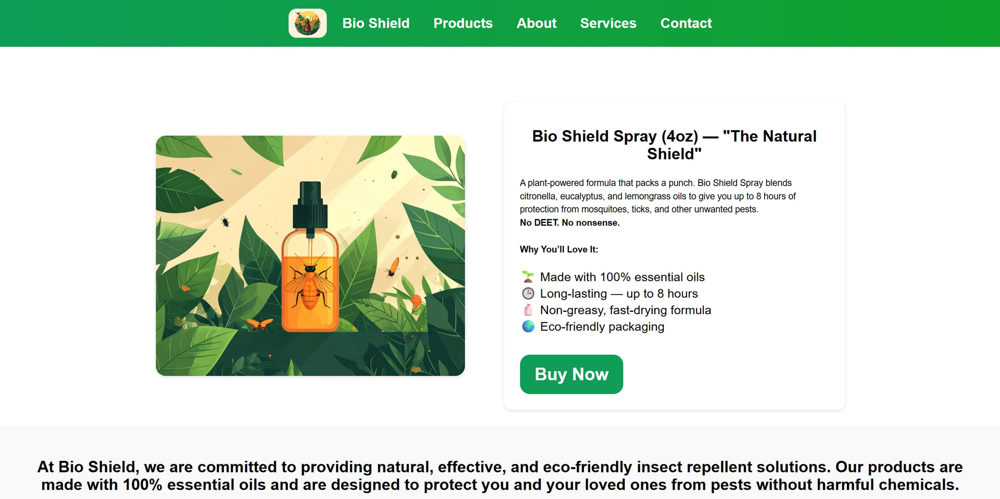
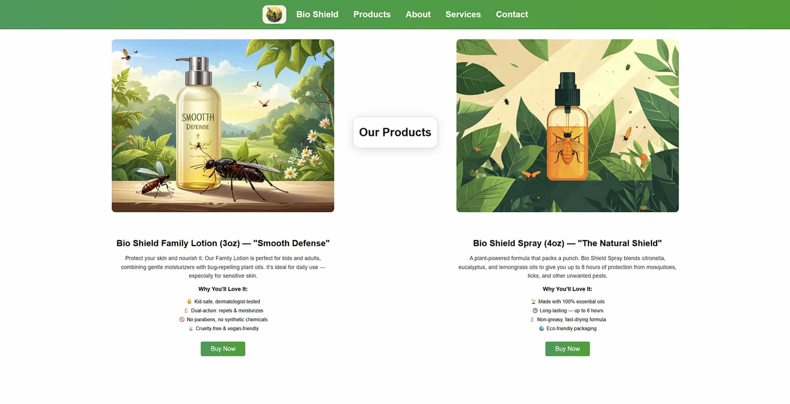
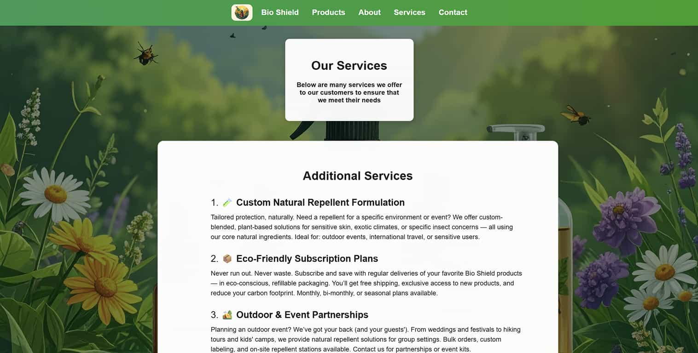
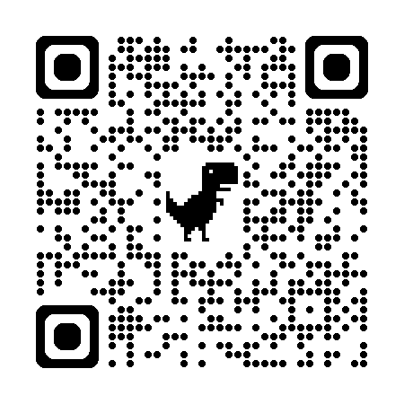

Here is a snapshot of one of the key pages on Bio Shield
Web Developer • UX Designer
Project Manager • Web Developer • UX Designer

Mateo Siechert
Tahina Rabetsimba
Here is a snapshot of one of the key pages on Bio Shield
Languages Used
This is a webpage dedicated to Bio Shield’s anti-bug repellent, including a contact form, product listings, company services, an about page, and a purchasing process! This website was entirely coded with my knowledge of AI literacy.



QR Code to access Bio Shield